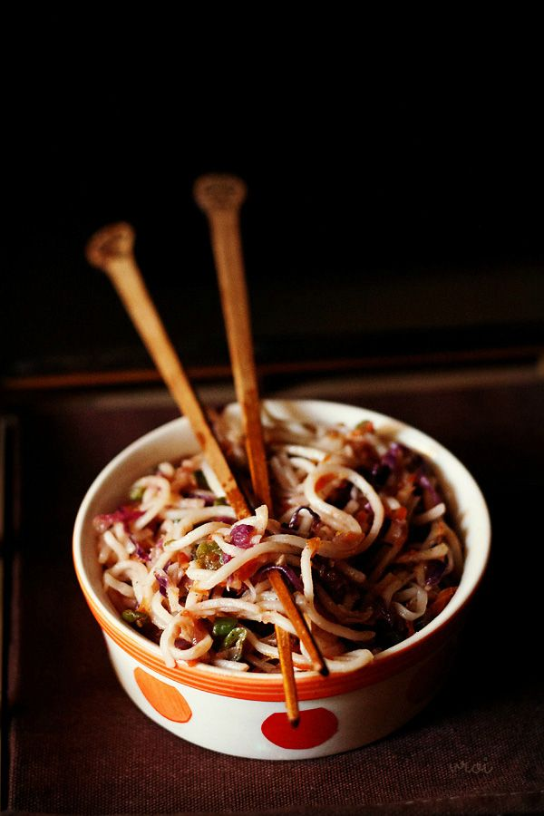

Home
Tacos
Lasagna
Biryani
Ramen
Chowmein
Chow mein (/ˈtʃaʊ ˈmeɪn/ and /ˈtʃaʊ ˈmiːn/, simplified Chinese: 炒面; traditional Chinese: 炒麵; Pinyin: chǎomiàn) is a dish of Chinese stir-fried noodles with vegetables and sometimes meat or tofu. Over the centuries, variations of chǎomiàn were developed in many regions of China; there are several methods of frying the noodles and a range of toppings can be used.
It was introduced in other countries by Chinese immigrants.The dish is popular throughout the Chinese diaspora and appears on the menus of most Chinese restaurants abroad. It is particularly popular in India,Nepal,the UK, and the US.

About Chow Mein Recipe:
Making veg chow mein is as easy as stir-frying noodles and veggies together. In fact, if the vegetables are already chopped for you, the whole dish comes together in just minutes! For this reason, I highly recommend you get out your food processor; it’ll make the whole process a snap.
This particular recipe is inspired by the taste of chow mein served from Indian street carts. The tangle of noodles and vegetables are tossed in a tangy-sweet sauce that is nearly addictive. It is a favorite in our house.
Making chowmein recipe at home is actually quite easy, as this recipe will soon show. It is also entirely customizable based on your needs. If you are gluten-free, simply swap in gluten-free noodles of your choice and opt for tamari or coconut aminos in place of the soy sauce.
You can also swap in your own favorite assortment of vegetables, making this a lovely recipe for cleaning out your crisper drawer at the end of the week.
If you are looking for an easy way to get your kids to eat more veggies, this chow mein recipe is a great place to start. For a healthier option I recommend using whole wheat noodles or buckwheat noodles.
How to Make Chow Mein:
Veggie Prep and Cooking Noodles
1. Bring 5 cups of water to a boil. Add ¼ teaspoon salt to the water.
water boiling in pan
2. Add 150 to 200 grams noodles. No need to break them. Here I have used hakka noodles. But you can use whole wheat noodles, soba noodles (buckwheat noodles) or chowmein noodles or ramen noodles.
3. Cook the noodles according to package directions.
4. Allow the noodles to cook until tender and softened. You don’t need to cook the noodles al dente as later we only toss the noodles with the stir-fried veggies and do not cook them further. But if you prefer, you can cook them until al dente.
Different types of noodles require different cooking times, so prepare noodles according to the package instructions.
cooked noodles still in water; fork is showing finished consistency
5. Drain the cooked noodles in a colander.
6. Rinse the noodles very well under running water to stop the cooking process.
7. Add 1 to 2 teaspoons of toasted sesame oil to the noodles. You can also use any neutral-flavored oil.
8. Toss them well so that the oil gets coated evenly on the noodles to prevent them from sticking together. Cover and keep the noodles aside.
9. While the noodles are cooking, chop and grate the veggies. Also chop the button mushrooms. Set aside.
10. Prepare cornflour (aka cornstarch) slurry with 2 teaspoons cornflour and 2 tablespoons water. Keep aside.
11. Heat 2.5 to 3 tablespoons of oil in a pan or wok on medium heat. You can use any neutral-flavored oil.
Making Chow Mein:
Add the following ingredients:
1.2 to 3 teaspoons finely chopped green chilies
2.1 teaspoon finely chopped ginger
3.1 teaspoon finely chopped garlic
Sauté the green chilies, ginger and garlic for about 20 to 30 seconds. Green chilies add quite some heat to the dish. Skip if you do not prefer them or if making for kids.
12. Add ⅓ cup finely chopped onions. Stir and sauté for a minute. Instead of onions, you can use spring onion whites (like in the recipe video) or shallots.
13. Add ¾ to 1 cup sliced button mushrooms and ¼ to ⅓ cup finely chopped french beans.
14. Stir and sauté on medium heat till the edges of the mushrooms get lightly browned.
15. Add the following ingredients:
¾ cup grated or shredded carrots
¾ cup shredded cabbage, green or purple cabbage
1 teaspoon finely chopped celery, optional
¼ cup thinly sliced capsicum (bell pepper)
add remaining vegetables to make chowmein noodles recipe
16. Stir and increase the heat to a high. Stir fry everything on high heat for 2 to 3 minutes.
17. Add 3 teaspoons soy sauce. At this step you can also add tomato sauce or red chili sauce/green chili sauce. Since I already added green chilies, I did not add chili sauce.
18. Add ½ teaspoon black pepper or white pepper powder or add as required
19. Season with salt as required. At this step you can also choose to add tofu cubes or sprouts. Add them and stir fry for a minute.
20. Stir everything and then add the cornflour slurry. Be sure to stir the cornflour paste before adding it to the vegetables and keep the heat to a low.
21. Stir and sauté for a minute on medium-low heat.
22. Add the cooked noodles and increase the heat again.
23. Stir and quickly toss the noodles with the veggie mixture. A lot of handwork is required while tossing and mixing the noodles.
stir vegetables and chow mein noodles together.
24. Lastly, add ½ teaspoon rice vinegar and give a final mix to chowmein. Remove from heat.
You can also use apple cider vinegar or white vinegar in place of rice vinegar. If you are not fond of vinegar then feel free to skip adding it.
add vinegar to chow mein to finish recipe.
25. Serve veg chowmein steaming hot. Feel free to garnish with 1 to 2 teaspoon toasted sesame seeds and some spring onion greens.